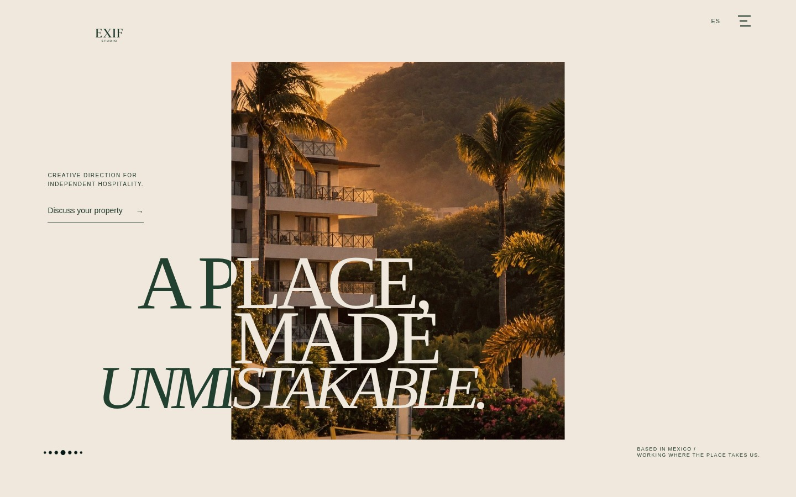
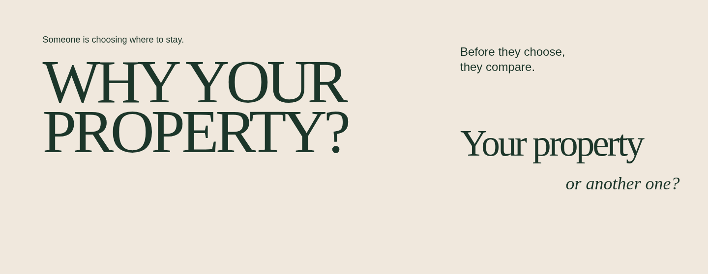
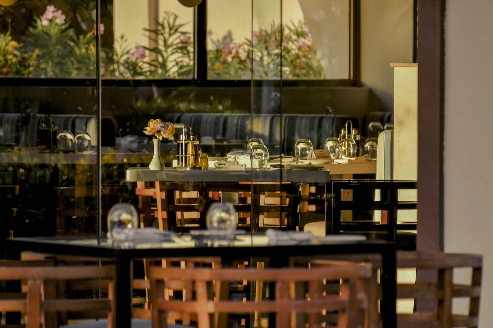
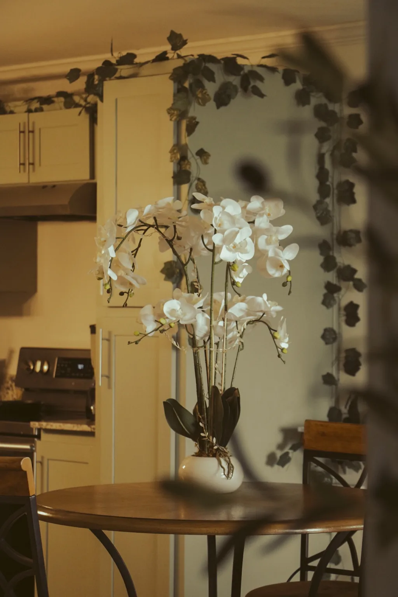
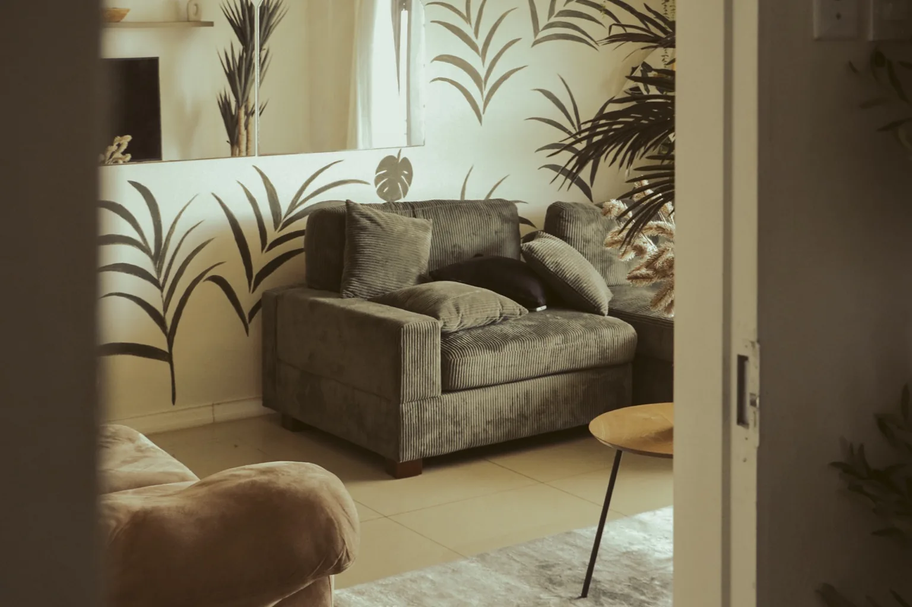
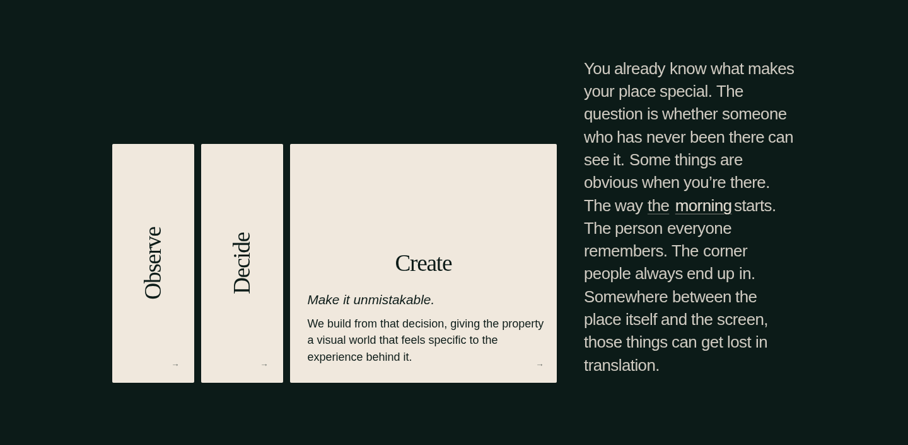
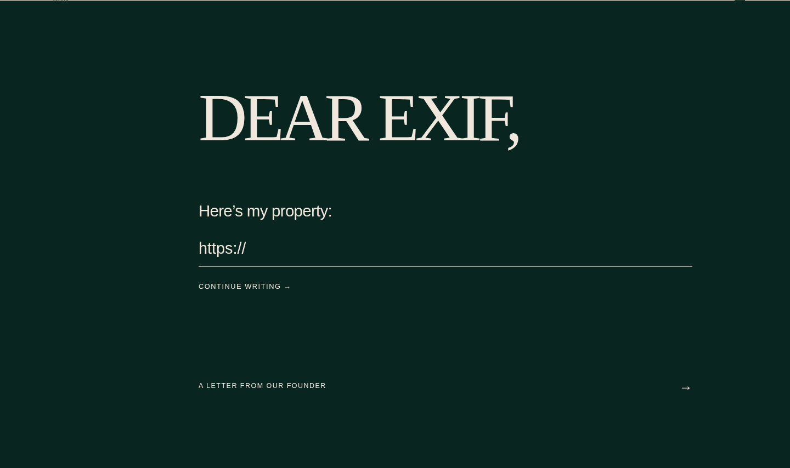

PROTECTED SEQUENCE / REPRESENTATIVE STILL
1 / A photographic window
The existing loader and handoff remain unchanged. This frame represents the window, not a new loader design.
Keep the original commercial question as one brief transition. The photograph returns immediately afterward.
The existing loader and handoff remain unchanged. This frame represents the window, not a new loader design.

Original image, headline and boundary behavior. One invitation in the cream margin; on mobile it sits below the photograph.

Why your property? Preserve the commercial question, condensed to 560 px desktop / 480 px mobile. No new CTA or selector.



Nine existing images: reflection, orchid, lounge, terrace, guests, table tennis, loungers, golden beach, leaves. Protect gallery mechanics.

The original Observe / Decide / Create deck. Keep its spatial selection; add no duplicate exercise.

Dear EXIF stays the quiet coda. No promotional section before it. Navigation and the founder’s letter remain protected.